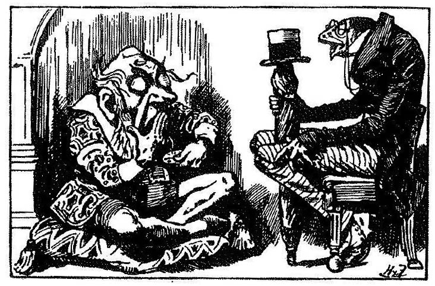
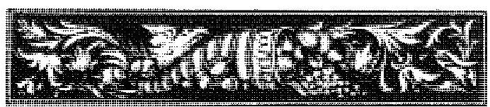

Appreciate the challenge which dreams will present to your memory, and be prepared. Proper respect for dreams will be a fundamental prerequisite for learning how to remember them. Henry Reed
It has recently been proven scientifically that everyone dreams every night. Yet, many people have a hard time remembering their dreams. Some will even swear that they never dream. However, it's not that they don’t dream, but that they don't remember. Why is this so difficult? Is it possible for us to learn to remember our dreams'?
Part of the difficulty comes from the nature of dreams, but the attitudes that we have learned in our culture towards our dreams are the big factor here. Our dreams are sensitive and our memory of them is fragile. But our society has not considered them important or valuable. Many of us have learned to view our dreams with indifference, fear, impatience, distrust and ignorance.
We have learned to discount and forget our dreams and it is important to recognize that it may take some time and effort to reverse that process. We have learned to see dreams as something foreign and strange. When we talk of dreams we feel as though we are relating something esoteric, weird or even crazy. And yet, dreams are common to all peoples in all times. As we become familiar with the world of dreams, we can see that they use the same mode of expression, the same kind of "logic", the dynamic, emotion-packed language of images.
Our dreams are a natural part of all of us, an integral portion of the biology of healthy human beings. We can never quite isolate them and grasp them as objects "out there". When we are looking at our dreams, we are gazing into a kind of inner mirror. Since dreams are a part of us, our memory of them can be improved by a change in attitude.

How can you develop an attitude that is inviting to your dreams? You can begin with a simple curiosity, a desire to know yourself better. You can identify and reevaluate feelings and beliefs you have developed about dreams in the past. You can be more open to your dreams by making space for them in your daily life and by deciding you will try to respect whatever they send you way. As you come to show an interest in and respect for your dreams, they will return the compliment.
While attitude is the most important factor in increasing your recall of dreams, there are specific things you can do to complement this change in attitude. Since different things work for different people, try a range of things to see what works best for you. Don't give up if you don't get immediate results. Some people must work at it for months to break old habits and develop a good memory for dreams.
The time you spend sleeping and dreaming is valuable time. Make sure you recognize this and give yourself plenty of time for letting go of the activities and concerns of the day to rest and regenerate. Dreaming appears to play an important part in the process of regeneration.
Scientific research has uncovered useful knowledge in this area. It has been observed in dream laboratories that several times during a night's sleep, people enter a light stage of sleep and their eyes move rapidly under the lids. This shows that the person is dreaming. If they are woken immediately after these rapid eye movements (REMs) they will usually be able to remember a dream. However, if they fall into a deeper sleep and then are woken, they may have forgotten. This research also shows that everyone spends an average of 25% of their sleeping time dreaming.
Just before you fall asleep in the evening, remember that you will dream tonight. Remind yourself that you would like to wake up at the end of a dream and catch it in your memory. Re-affirm your intentions to remember and record your dreams when you awake by placing a pen, paper and dim light by your bed.
Even if you have never remembered a dream before, it's important to be ready for them. Since memory for dreams is so fragile, it's good to have some way to record them in permanent form. Furthermore, when you have been keeping a diary of your dreams for some time, you will be able to look back and review exactly what happened in a dream or identify a series or development in your dreams that can only be recognized over time. Some find a tape recorder to be easier than writing a dream down, but it may prove harder to retrieve the dreams later. Whatever works for you...
The point of waking is a crucial time for catching a dream. If you are jolted awake abruptly by an alarm and have a list of the days activities in mind which you have to jump right into, you won't have much chance of remembering a dream. It will make a big difference if you can arrange a little time in the morning to turn your attention inward and quietly reflect for a while.

As you awake, gently focus your attention on whatever is in your mind. It may be just an image, a feeling, a thought, or a longer dream sequence. If there is something there, no matter how small or insignificant it seems, focus on that, get into it and follow it. Often a small fragment or vague feeling can unfold into a longer dream-memory if we stay with it. If we discount it and decide it's not worth our attention, we can easily lose the only clue we have.
Once you have gone over what you remember in your mind, write it down immediately. Don't wait while you do something else, as you may be surprised at how fast your memory can fade. I always write the dream down in first person present tense as though it were happening now - this keeps me much more in touch with it. Record the date and exactly what you remember of the dream - no more, no less.
There are a wide range of things you can do with a dream diary. You may wish to leave room for notes about your waking life or to do further work on the dreams. How thoroughly or briefly you describe the dream (drawings?) may vary depending on how important it is to you. If you are remembering more dreams than you can record you can let some go by, but do what you can. If something scares or embarrasses you, try to get it written down anyway. It may prove valuable later. I consider my dream diary private until I feel ready to share a dream with others. This makes it more comfortable to record all of my dreams.
Gradually, as you work on it over a period of time, you can learn to be more sensitive when you awake. There may still be times when your mind seems blank in the morning. Try waiting a bit, reflecting a minute. Henry Reed suggests laying in different positions in which you have been sleeping to see if that brings any memories. If nothing comes to you, don't worry, there will be more chances on following nights. You cannot force yourself to remember a dream and trying too hard may chase them away. But if you are patient and keep following this basic steps your night will come.
If you continue to have trouble, Ann Faraday has suggested that you might try having a conversation with your dreams Ask them why they don't come to you and listen for their reply. Jack Johnston suggests that you look at the last dream you can remember and see what you can get from it. Perhaps your dreams are waiting for you to understand the last message they sent you. If you are reading about dreams or hearing others dreams that may stimulate memory of your own dreams as well.
Again, attitude is the important thing, and as you decide you really want to remember your dreams, you will probably start to do so. With each dream you remember and record, your dream-world will become a little clearer and more familiar. Some dreams will make sense and seem valuable immediately, but others may seem confusing or mysterious. Perhaps these dreams will seem to hold a meaning that is just beyond your grasp. As more dreams come to you, you may want to start sharing them with others and working on them to integrate them into your life.
The dream goes on all day long - our lives can be read as footnotes to our dreams as easily as our dreams as waste-products of our lives. --Robert Kelly
